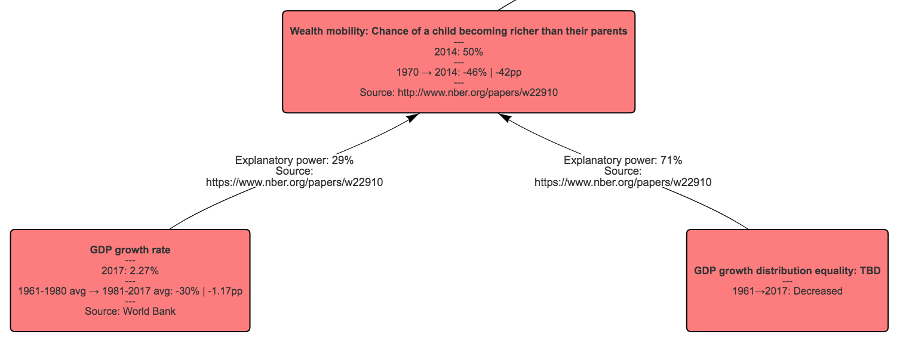

Policy Views
This is a demo of an alternative way to display political views.
This is just one view - my overall goal, if this format is useful, is to document many political views this way (ideally authored by, or at least signed off by, the viewholder), belonging to think tanks, opinion writers, politicians etc, and store them all in one place.
There are more details further down this page, including a list of benefits this format provides.
If you have any thoughts or feedback, I'd love to hear it - moc.liamg@yentrahneb
If you'd like to receive updates on this project or similar ones, signup for email updates.
Views
Noah Smith Bloomberg Opinion writer
Benefits of the format
- All data points can be automatically kept up-to-date. The reader doesn't have to hope Smith writes an updated article in a few years time to see how he thinks the US is faring.
- The view is persistent and canonical - anytime Smith changes his worldview (for example, he could add "how many close friends the average person has" into his view), it would be added into this existing document, keeping it up-to-date. This change, and all other changes, would be browsable to see how the view has changed over time.
-
In addition to showing the issues the viewholder cares about and the indicators for those issues, it can also display the things the viewholder thinks have a causal influence on those issues.
- For example, one of Smith's indicators in the article is "absolute mobility" (a person's chance of being richer than their parents), which is falling. Generally, the article only talks about overall indicators, and not the determinants of those indicators, but the paper Smith links to lists two determinants for mobility - GDP growth rate and distribution. I have added these to the map to demonstrate how this would look:
- This separates out the viewholder's goals from their model of how the world works. If someone reading Smith's view agrees with his goal of increasing absolute mobility but differs on what they think influences absolute mobility, it would be clearer and easier to establish precisely where their views diverge. It would also be easier for the rest of us to compare these two views.
- The focus is on communicating political goals and beliefs about what influences those goals. There is no mention of political parties, labels, or politicians. It's obviously possible to extrapolate someone's political leanings from this view, but there's still more policy and less politics.
-
Every object has its own distinct URL - imagine being able to say:
- "Here are my views on immigration."
- "Here is what I think impacts educational achievement."
- "Here is my entire worldview."
- When browsing a view, it would be easy to copy parts of it to your own view.
Misc Notes
- There are some additional connections that could be added - e.g. between GDP growth rate and some of the other items in the economics section.
- In an ideal world, the view would be thorough enough that it would be rare to make a change to the view (e.g. adding an indicator) - most changes in the state of the world that matter to the viewholder would just be reflected in the existing indicator's getting a data update.
- Obviously, not all political conversations are suitable for this format. It will be interesting to see exactly which ones work and don't work.
- There is more detail about the format in this post.